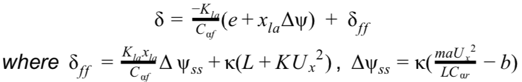
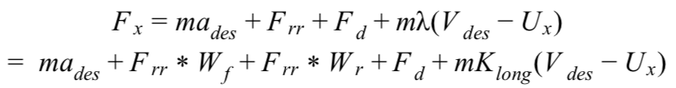
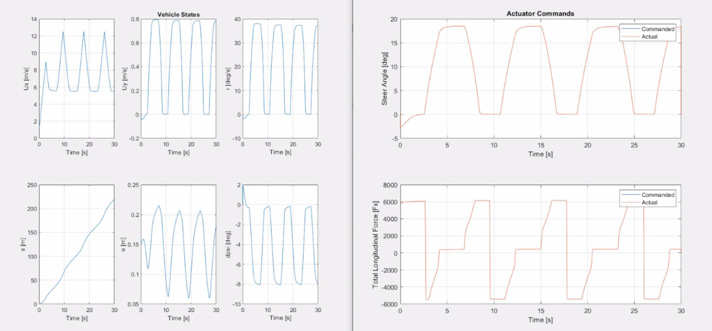
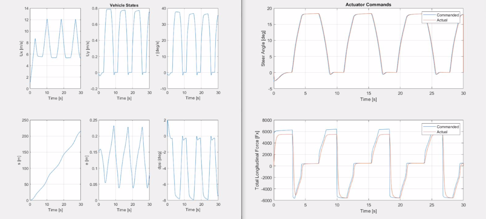
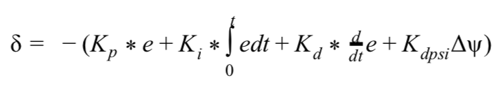
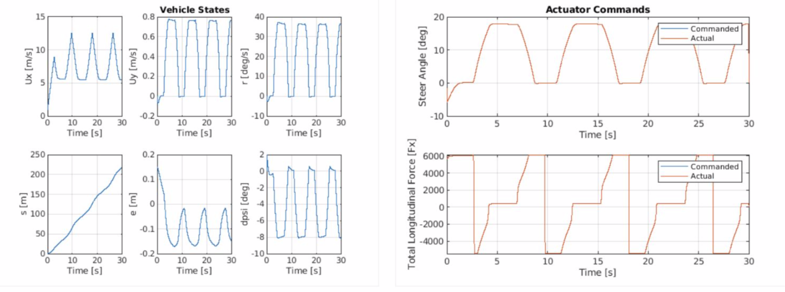
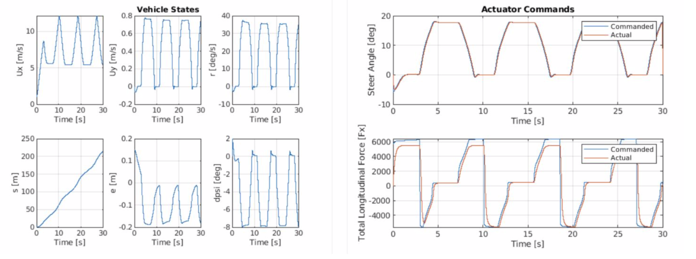
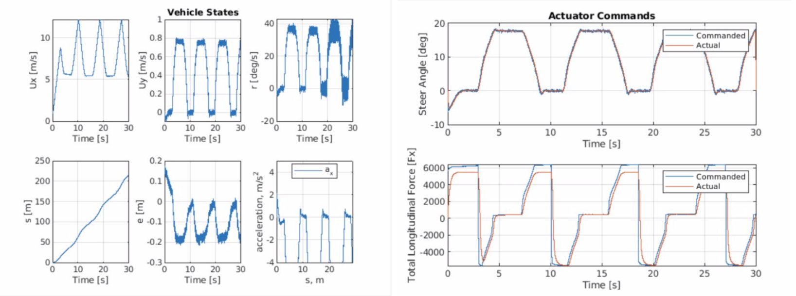

Autonomous Driving in Volkswagen Golf GTI
This project was to develop controllers for a Volkswagen Golf GTI to autonomously drive an oval path. The controller simulation profile was determined by the following steps:
- Start with a longitudinal lookahead controller and implement speed control on a straight road
- Tune controller gains according to desired longitudinal and lateral acceleration, lateral error, and heading error
- Combine speed profile and longitudinal controller with lateral control law for full steering control in given path
- Simulate the developed controllers in a detailed simulation setting that incorporates more realistic actuator dynamics and sensor noise
- Repeat above steps with a PID controller
Lookahed Controller
A lookahead controller with a feed forward term of the following form was used:
and longitudinal control was achieved by including drag, grade, and rolling resistance terms as follows: 
The gains were determined so that the lookahead value was small enough to be able to track the oval curvature of the path. Meanwhile, the Kla gain was increased so that it provides reasonable lateral error within 25cm. Following plots show simulation results.
Nonlinear Simulation  Harder simulation with actuator dynamics and weight transfer PID Controller
For the PID controller, the final gain from this controller was determined by the proportional, integral and derivative of the lateral error. To better track the path, we also incorporated the proportional of the heading error. The final steering angle at every timestep within the loop was given by:
Following plots show simulation results
Nonlinear Simulation  Harder simulation with actuator dynamics and weight transfer  Add in sensor noise 